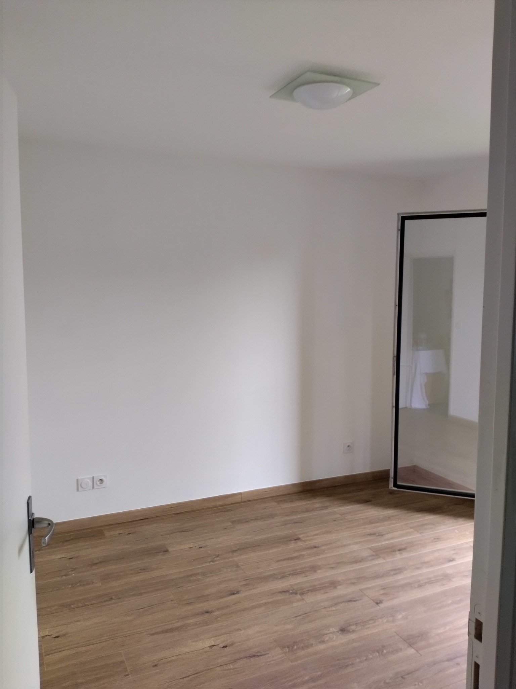
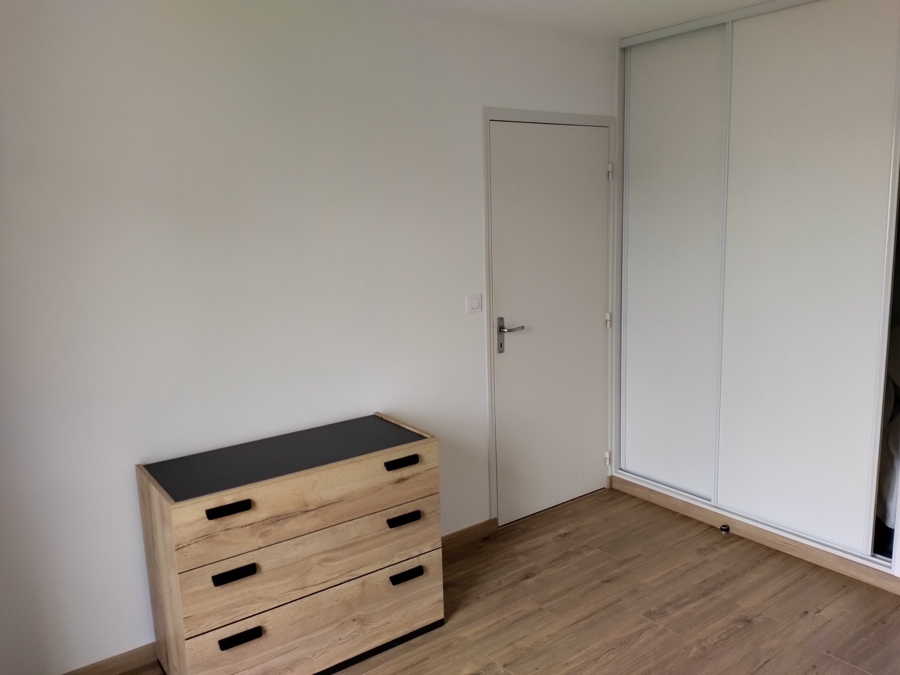

Des finitions élégantes pour un intérieur qui vous ressemble.
Victor Décor réalise tous vos travaux de peinture intérieure : murs, plafonds, boiseries, portes, escaliers et finitions décoratives. Nous utilisons des peintures professionnelles pour garantir un résultat durable et esthétique.


Une simple remise en peinture ne suffit pas toujours après un dégât des eaux. Victor Décor réalise un diagnostic complet de vos murs et plafonds afin d'identifier l'origine des désordres avant toute intervention.
Nous mettons en œuvre des solutions adaptées : traitement des taches, préparation des supports, application de sous-couches techniques, peintures anti-humidité et finitions durables.
Chaque chantier est étudié afin de garantir un résultat esthétique et durable dans le temps.